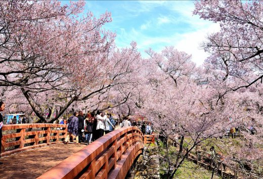

Мовчання вітру.
Хіба не чіпатиме порив
Сакури пелюстка?
Хаара, по-японськи весна, - час цвітіння декоративної вишні «сакури», з якою пов'язаний один з найкрасивіших свят Країни
Висхідного Сонця. З кінця березня до початку квітня Японія повністю перетворюється: сотні дерев зацвітають всюди білими
і рожево-білими квітами, через що здалеку здається, ніби вони оповиті хмарами або покриті пластівцями снігу.
Щороку в парках, алеях, садах, біля палаців і храмів збирається безліч людей, щоб помилуватися воістину прекрасним
і захоплюючим видовищем. Цей звичай отримав назву «ханами» (від слів «хана» - квітка і «мі» - дивитися), що дослівно
означає «розглядання квітів».

Сакура - національний символ Японії, якому присвячено безліч пісень і віршів. Існує близько 16 видів і приблизно 400 сортів
цього дерева. Найвідоміші - сомейошіно, яка цвіте білими квітами, і сідарезакура (плакуча сакура), на якій розпускаються рожеві
квіти. Вважається, що найкрасивіша сакура цвіте в древніх столицях - Кіото, Нара, Камакура.
На жаль, цвітіння сакури короткочасно. Досить пориву вітру чи дощу, і ніжні квіти, не встигнувши розпуститися,
швидко опадають на землю. Можливо, тому в буддизмі квітуча сакура є символом тлінності і непостійності буття,
а в поезії вона асоціюється з минулою юністю і любов'ю.
Традиція милування квітами сакури носить в Японії загальний характер. Щороку метеорологічні агентства
та засоби масової інформації чітко стежать за початком сезону цвітіння і повідомляють про нього як про подію
державної важливості. Офіційне відкриття сезону цвітіння сакури проходить в центральному парку Синдзюку в Токіо в присутності
імператорської родини. Як правило, на свято запрошуються всі відомі політичні та громадські діячі Японії.